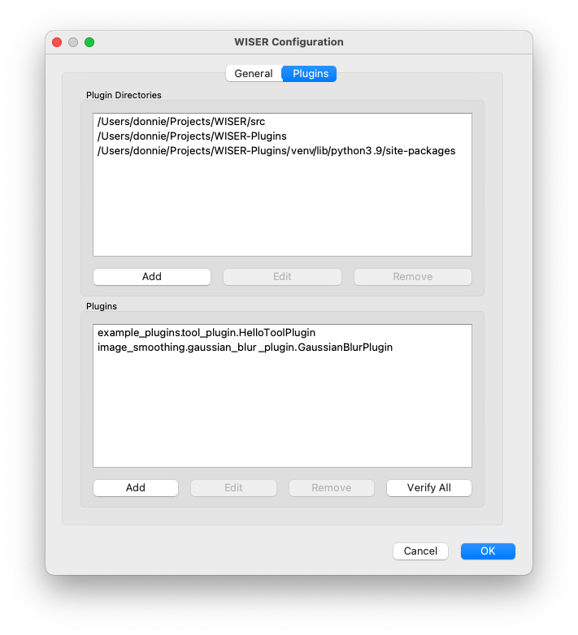

WISER Plugins Overview¶
WISER has three places where user-implemented plugins can be incorporated into the application:
“Tools” menu plugins are shown in the WISER application menubar, under the “Tools” menu. These plugins can implement their own workflows, and can access and manipulate application state.
Context-menu plugins are shown in context menus displayed in various parts of WISER, when the user right-clicks in an area, or uses other OS support to show a context menu. Besides the capabilities of “Tools” menu plugins, context-menu plugins are also able to respond to the picking of specific objects in WISER, such as datasets, spectra, and Regions of Interest (ROIs).
Custom band-math function plugins extend the WISER band-math functionality with additional custom functions. They are only used in this context.
The process of creating a WISER plugin is straightforward. One must create a subclass of the plugin base-class corresponding to the functionality to be extended:
wiser.plugins.ToolsMenuPlugin- “Tools” menu pluginswiser.plugins.ContextMenuPlugin- context-menu pluginswiser.plugins.BandMathPlugin- band-math plugins
Each of these classes has slightly different functionality to implement.
Note: To implement a WISER plugin, you will need to be comfortable with these libraries:
Python 3
Qt5 / PySide2 (for graphical UI interactions)
NumPy / AstroPy (for operations involving imaging spectroscopy data)
In addition, plugins may rely on other third-party libraries for doing computations.
Development Environment¶
It is not uncommon for plugins to use third-party libraries for various processing tasks, but WISER only includes the basic libraries necessary for visualization. To support such plugins, the WISER “plugin paths” configuration must be updated to point to a Python environment where the plugin dependencies are installed. This configuration is accessible through the WISER config properties UI, on the Plugins tab:
In the top half of this config window, the necessary plugin paths may be
entered. This will either be the path to the plugin’s source-code itself (for
example, the /Users/donnie/Projects/WISER-Plugins path), or it may be the
path to dependencies required by the plugin (the
/Users/donnie/Projects/WISER-Plugins/venv/lib/python3.9/site-packages path).
There are several options for setting up plugin dependencies. The above example is set up with virtualenv, a widely used Python environment management tool. For example, the commands issued may be the following:
# From the ~/Projects/WISER-Plugins directory
virtualenv venv
source venv/bin/activate
pip install opencv-python
With this approach, you will generally want to point WISER at the
site-packages directory of the Python environment you initialize; this is
where all of the packages will be installed, and WISER can load them from there.
In the bottom half of this config window, the full module and class name of plugin classes may be entered.
The “Verify All” button in the bottom half of the plugin configuration is very useful, as it will attempt to load and initialize every plugin currently in the WISER configuration. If there are dependency issues, or if a plugin cannot be loaded for some other reason, an error will be reported, and the WISER logs will contain useful details for debugging the issue.
Logging¶
To facilitate debugging, plugins should make liberal use of the Python logging facilities to write to the WISER runtime logs. These logs are available at various locations depending on the platform WISER is running on:
Linux:
~/.wiser/wiser.logmacOS:
~/Library/WISER/wiser.logWindows:
%USERPROFILE%\AppData\Local\WISER\wiser.log
To facilitate logging, WISER provides a @log_exceptions decorator that can
be used to wrap plugin functions. This decorator will automatically log any
exceptions that decorated functions raise during execution.
- @wiser.plugins.log_exceptions¶
A decorator to log exceptions thrown by a function, on the specified logger. The decorator takes one optional argument
logger, allowing the specific logger to use to be specified.